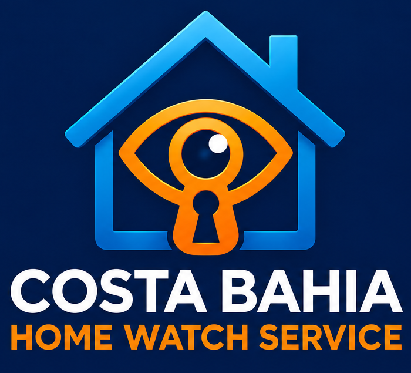
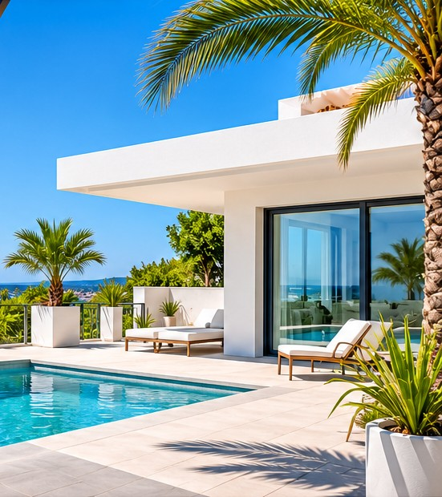

Custodia de llaves
Conservación y gestión responsable de llaves para accesos autorizados.

Supervisión, custodia de llaves y cuidado de segundas residencias en la Costa Blanca Sur.

Un servicio de supervisión y apoyo pensado para propietarios de segundas residencias.
Conservación y gestión responsable de llaves para accesos autorizados.
Visitas periódicas, ventilación y revisión visual del estado de la vivienda.
Detección de incidencias y coordinación de pequeñas reparaciones y profesionales.
Coordinación de limpieza y puesta a punto antes de tu llegada.
Recogida de correo y avisos relevantes durante tu ausencia.
Revisiones de accesos y comunicación de señales de posibles incidencias.
Una forma sencilla de mantenerte al tanto del estado de tu vivienda.
Acordamos las visitas y tareas adecuadas a tu vivienda.
Realizamos las comprobaciones y documentamos las visitas.
Puedes consultar la información disponible en tu área privada.
Santa Pola, Gran Alacant, Alicante, Guardamar y poblaciones cercanas. Consulta la disponibilidad para tu localidad.
Cuéntanos dónde se encuentra tu vivienda y qué tipo de servicio necesitas. Próximamente habilitaremos aquí el contacto directo y las solicitudes de presupuesto.
Formulario pendiente de configuración. No se recopilan datos en esta página.
Accede a tu área privada para consultar la información de tus viviendas y visitas.
Entrar al área clientes ↗